Designing an NES Controller
If you could make your own controller for a 1980’s game console, you would… right?
It turns out to be surprisingly simple and this is a build log of exactly that: a custom Nintendo Entertainment System (NES) controller.
NOTE: Kevin Smith said that all the project files can be found on github, but this was never updated with a proper GitHub link, nor does he have an account on there.
I highly recommend it as a fun and rewarding beginner electronics project.
Related project: NES Game
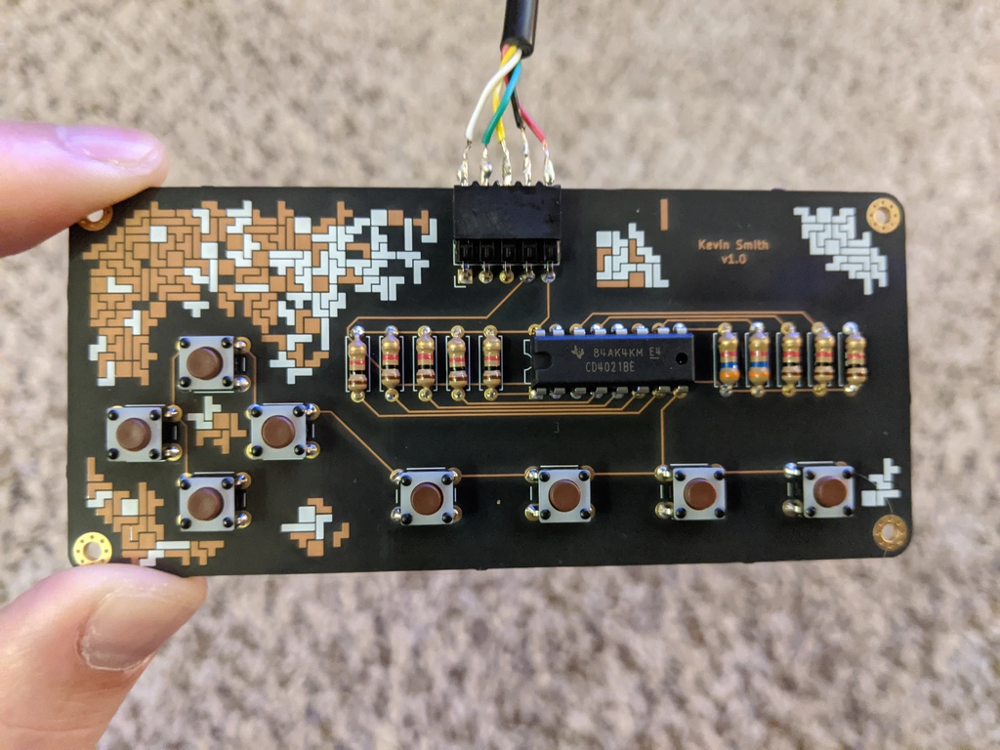 Tetris themed art using exposed copper traces and silkscreen.
Table Of Contents
How NES Controllers Work
I will only give a brief overview here. This video by NesHacker and this page by tresi cover the topic wonderfully and in more detail. No links to NES resources would be complete without also mentioning the NESDev Wiki.
Let’s get to it.
An NES controller has eight buttons:
- A,
- B,
- Start,
- Select,
- Up,
- Down,
- Left,
- Right.
All buttons are connected to input pins on a shift register which in turn is connected to the console’s controller port.
When a button is pressed, the ciruit is closed and the associated pin on the shift register is directly connected to ground (GND). This is the LOW state or 0V.
So what happens if the button is not pressed? That’s where the resistors come in. When the circuit is open, the pin is not connected to anything. This is considered a floating state where it could float between 0V (LOW) and +5V (HIGH). To avoid this uncertainty, a relatively high value resistor is used to pull up the voltage to +5V (HIGH) when the button is not pressed. This is called a pull-up resistor.
Now on to the shift register itself. There are 16 pins total on the shift register.
| Pin | Count | Description |
|---|---|---|
| Unused | 3 | - |
| Inputs | 8 | Connected to buttons and are either LOW or HIGH depending if a button is pressed or not. |
| GND | 1 | Connected to ground. |
| +5V | 1 | Connected to +5V power source. |
| Clock | 1 | Console switches the clock signal from HIGH to LOW to synchronize communication between it and the controller. |
| Latch | 1 | Console sets this HIGH to store all input states in the ‘register’. |
| Data | 1 | Console reads the state of each button serially (one at a time). |
The controller is powered by the NES console so the GND and +5V pins connect to the console.
The clock, data and latch are used to transfer the button states serially (one at a time) to the console.
An NES game has code that polls the controller and serially reads the state of each button. In fact, you can check out my NES Game to see that in action!
Buying parts
First, there is some basic electronics equipment you’ll need:
- Soldering iron
- Solder
- Wire cutters
Next, is the bill of materials (BOM):
| Part | Qty | Price/Unit | Link |
|---|---|---|---|
| 3.6k Ohm Resistors | 2 | $0.10 | Digi-Key |
| 1k Ohm resistors | 8 | $0.10 | Digi-Key |
| Buttons | 8 | $0.35 | Digi-Key |
| Female Socket | 1 | $1.84 | Digi-Key |
| Male Header | 1 | $0.43 | Digi-Key |
| Shift Register | 1 | $0.73 | Digi-Key |
| Controller Extension Cable | 1 | $5 - $8 | Amazon search |
| PCB | 3 | $36.75 | OSH Park |
NOTE: OSH Park has a minimum of 3 boards. You can’t order just one, so you may want to get 3 boards worth of components and make 3 controllers!
TIP: Ask your local used game store if they have any broken NES controllers. You just need to scavange a good cable and recycling is a great option!
Make sure to search around online. You may find better prices for any item!
Prototype
Once my parts arrived, I used a breadboard to prototype the controller and ensure my understanding of the circuit was correct. The most expensive part is the PCB so make sure your circuit works first.
I have a bad habit of using long jumper wires for everything. Definitely could be cleaner, but hey it worked!
After playing a few games of Tetris with my prototype, it was back to designing the PCB.
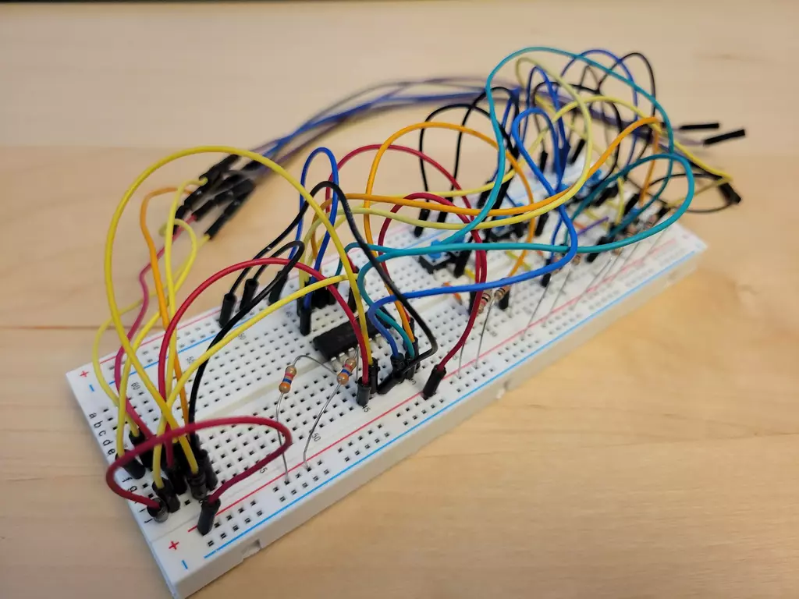
PCB design
I used KiCad to design my printed circuit board (PCB). It’s free, open-source and a very powerful tool. I only needed to learn a tiny fraction of features to complete this project.
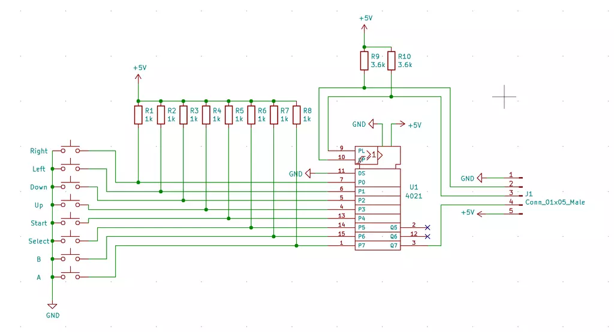 Proper conventions for circuit diagrams were probably not followed, so appologies for that.
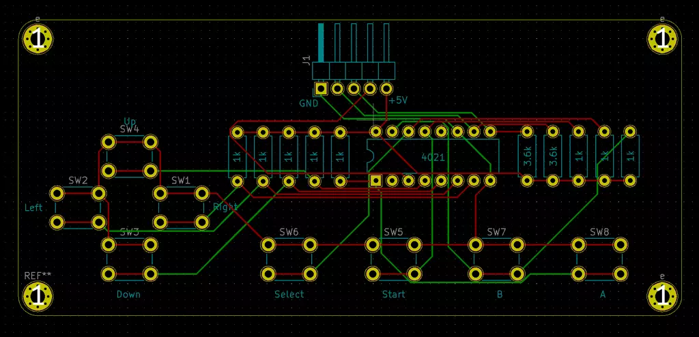 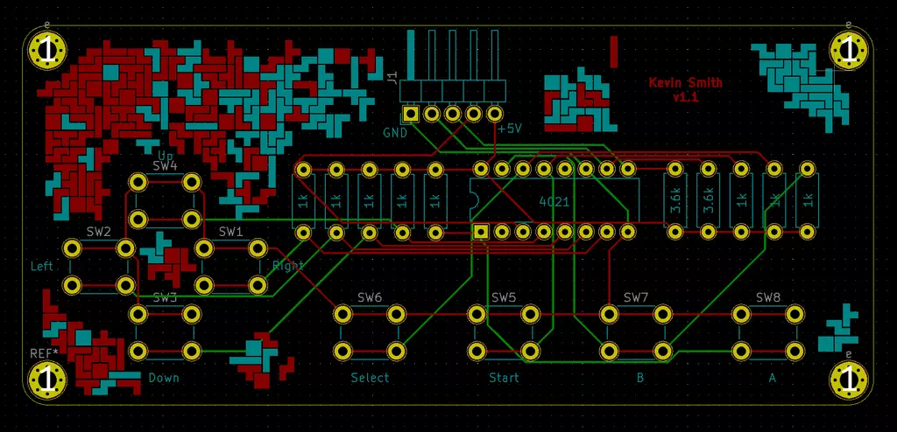
Build
About a week an half later, a lovely purple package showed up at my door.
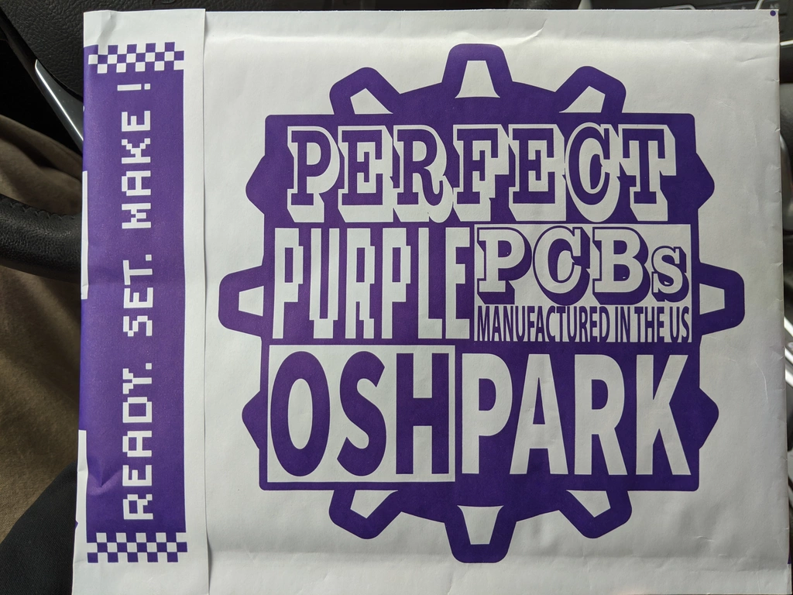 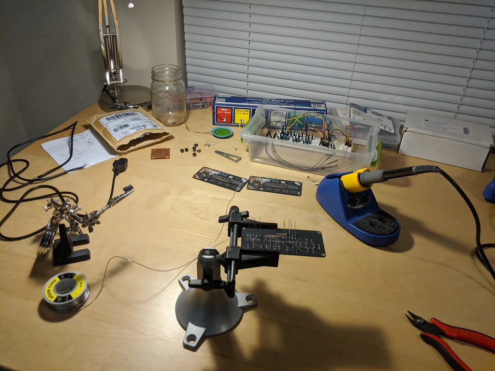
Cable
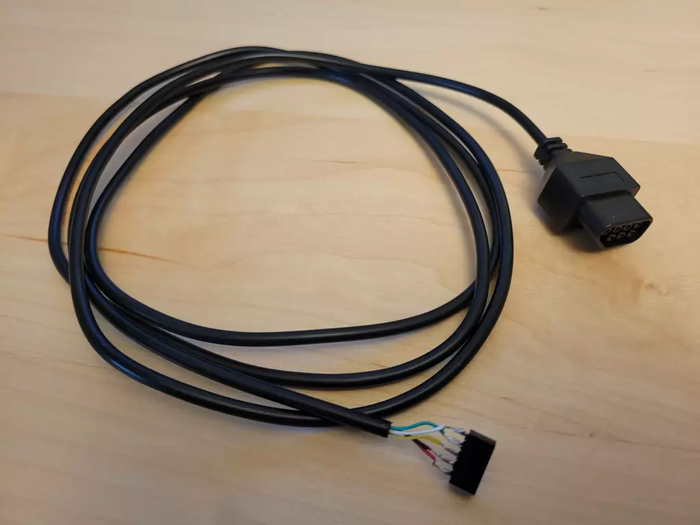 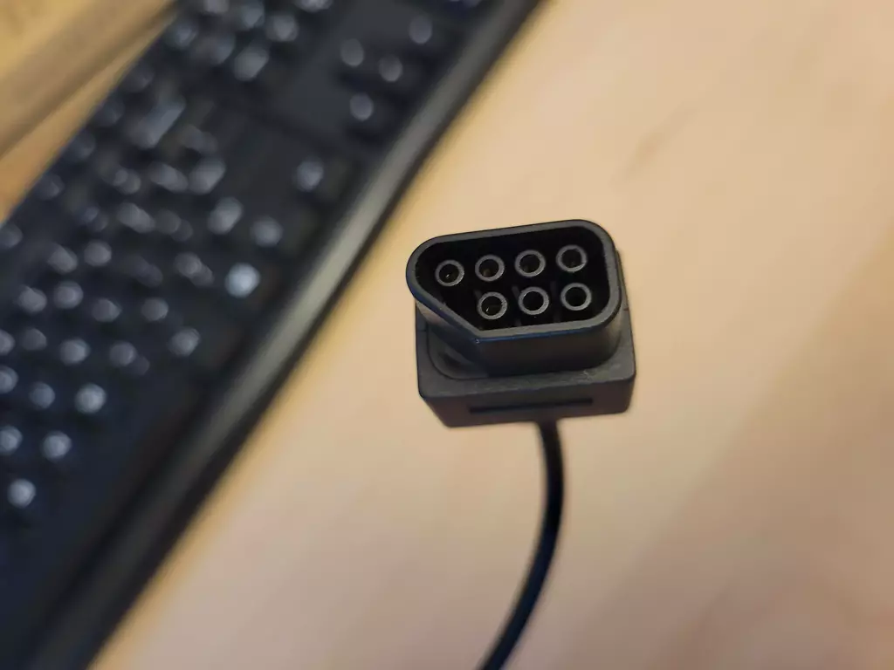 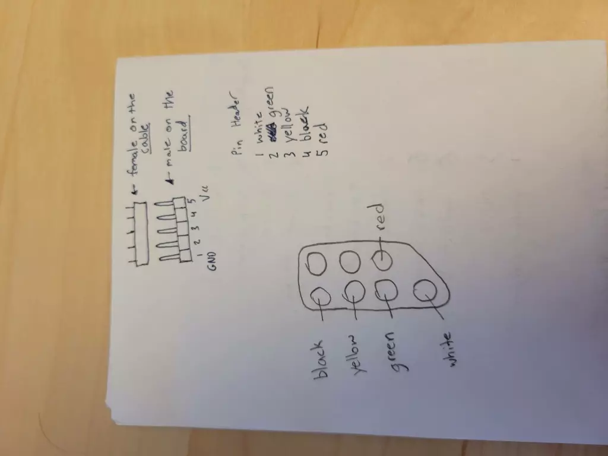
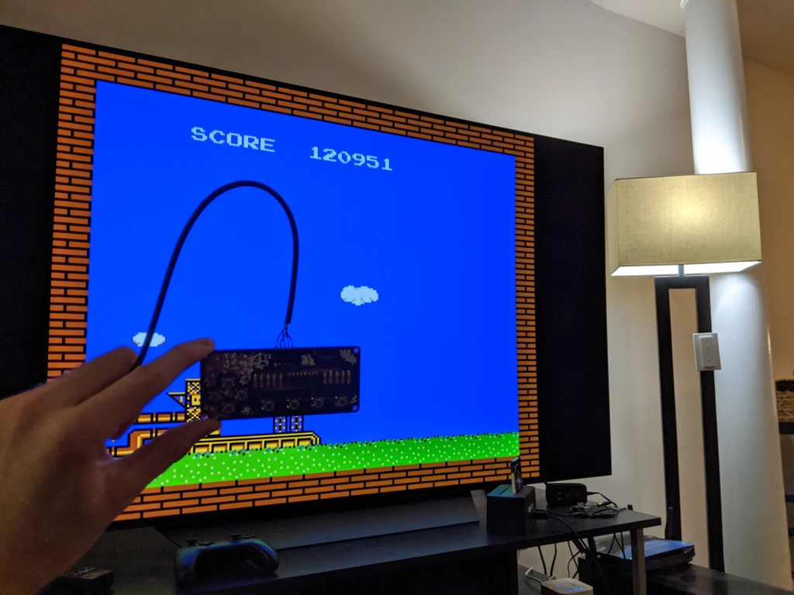
Kit
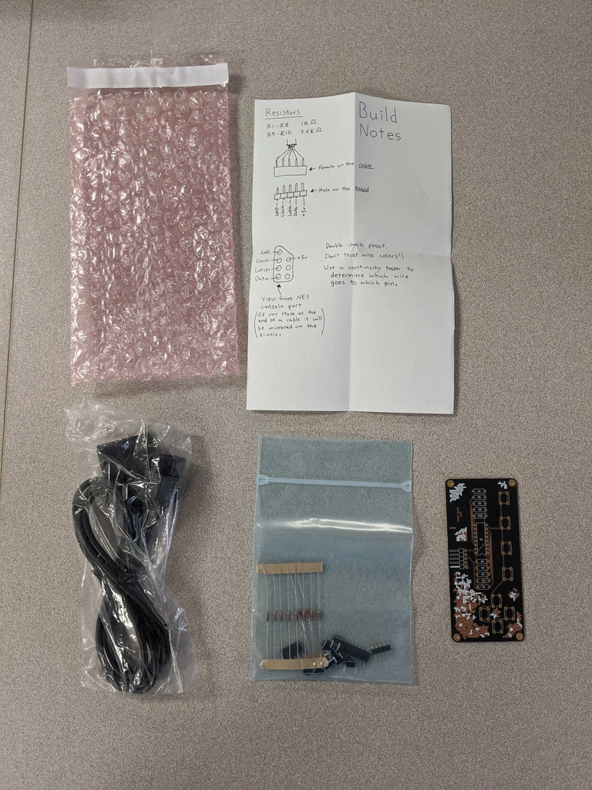
Lessons learned
- Cable strain relief is a must.
Plug in the controller, sit back on a couch and… oops. The cable wasn’t quite long enough, the connector tore off and you have to resolder tiny wires to it. Not fun. This is by far the worst part of my design. I have zero strain relief. One accidental tug and game over.
The official NES controller designed strain relief into the case itself wrapping the cable around plastic posts. If I ever get around to making a case for mine, I would seriously consider this approach.
- Don’t sacrifice too much usability for aesthetics.
I had seen so many beautiful PCB designs that are essentially pieces of art making creative use of exposed traces and multiple silkscreen layers and I wanted to do the same!
My first few prototypes eschewed all functional silkscreen markings in favor of pure art. As soon as you start soldering parts on you realize just how useful those silkscreen labels and footprints can be. Is the shift register backwards? Do I use the 1k Ohm or 3.6k Ohm resiters here?
When I threw together a kit for my friend, it became even more glaringly obvious when I felt the need to write extra notes about the pinouts on a piece of paper. Should have used a silkscreen layer on the bottom of the board!
- PCBs are prickly on the back.
Since I never made a case for the controller, you hold the PCB itself. Turns out the solder joints with through hole components are kinda sorta prickiy. Like uncomfortably prickly. Besides all the other reasons projects shouldn’t have exposed boards, this one just plain hurts.
My design did include a mounting hole in each corner of the board. The idea was to sandwhich the pretty PCB between two clear pieces of acrylic with short standoffs. Maybe that will happen some day…